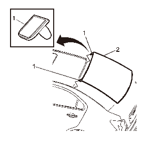

后窗的粘合安装
-
2.如玻璃需要再次使用，除约2毫米（3/64英寸）的粘合剂保留层以外， 清除夹焊凸缘上所有的原有聚氨酯胶条。警告：参见有关玻璃和钣金件处理的警告。
- 3.从夹焊部位清除所有隆起或松动的聚氨酯粘合剂。
- 4.检查是否存在以下问题，以免将来车窗玻璃破碎：
- • 焊接部位高起
- • 焊点
- • 密封胶硬化
- • 夹焊凸缘中有堵塞物或不规则处
-
5.按说明修理窗洞后，执行以下操作：注意:如果夹焊凸缘存在腐蚀，或钣金件需要维修或更换，则必须整修夹焊凸缘以恢复粘结部位的强度。 如果需要补漆，在喷涂颜色涂层前，盖住凸缘粘结部位，露出仅存底剂的清洁表面。
- 5.1 清除前罩板、座椅、地板和除霜器导管 上的所有碎玻璃。
- 5.2 用容积比为50/50的异基醇和水的混合液 湿润不起毛的抹布，清洁车窗玻璃内表面边缘。
- 6.确认所有底剂和聚氨酯粘合剂在有效期内。
-
 7.摇匀黑色玻璃底剂至少1分钟。注意:请勿将黑色底剂涂到夹焊凸缘(1) 原有聚氨酯 胶条上。只能在划伤、擦伤或已经涂过底剂的表面 上涂底剂。
7.摇匀黑色玻璃底剂至少1分钟。注意:请勿将黑色底剂涂到夹焊凸缘(1) 原有聚氨酯 胶条上。只能在划伤、擦伤或已经涂过底剂的表面 上涂底剂。 - 8.用新的涂抹工具将黑色玻璃底剂涂在已涂抹透明的玻璃预处理剂的夹焊凸缘(2) 的表面上。
- 9.让玻璃底剂干燥约10分钟。
-
10.在助手的帮助下，将车窗(2) 试装至窗洞，以确定安装位置是否正确。
- 11.确保定位销(1) 正确定位于上夹焊凸缘的定位槽中。
-
12.用遮蔽带(1) 标记车窗(2) 在窗洞中的位置。

- 13.从中心切割遮蔽带，并将车窗从窗洞处拆下。
-
 14.用新的涂抹工具将玻璃预处理剂涂在车窗内表面的四周，厚度约为18毫米（0.71英寸）。注意:在车窗上涂抹透明的玻璃预处理剂时要务必小心。这种底剂几乎立刻干燥，如果涂抹不均匀，可能 会污染车窗玻璃的视野。立即用不起毛的清洁抹布将涂底剂的玻璃部位擦干净。
14.用新的涂抹工具将玻璃预处理剂涂在车窗内表面的四周，厚度约为18毫米（0.71英寸）。注意:在车窗上涂抹透明的玻璃预处理剂时要务必小心。这种底剂几乎立刻干燥，如果涂抹不均匀，可能 会污染车窗玻璃的视野。立即用不起毛的清洁抹布将涂底剂的玻璃部位擦干净。 -
15.将第2层透明的玻璃预处理剂涂在玻璃相同的部位上。

-
 16.摇匀黑色玻璃底剂至少1分钟。注意:黑色的玻璃底剂在涂抹至玻璃后8个小时内有效。涂抹底剂的玻璃表面必须保持清洁。
16.摇匀黑色玻璃底剂至少1分钟。注意:黑色的玻璃底剂在涂抹至玻璃后8个小时内有效。涂抹底剂的玻璃表面必须保持清洁。 - 17.用新的涂抹工具将黑色玻璃底剂涂在已涂抹透明的玻璃预处理剂的部位(2) 上。
- 18.让玻璃底剂干燥约10分钟。
-
19.剪开喷涂器喷嘴，以便涂出最小宽8毫米（0.31 英寸）和高16毫米（0.63英寸）的聚氨酯圈。

-
20.用套管式涂胶枪均匀、连续地涂上聚氨酯胶条。

-
21.将车窗边缘用作喷嘴的导边，将聚氨酯粘合剂 (1) 涂到车窗玻璃(3) 的内表面上。

- 22.在助手的帮助下，将定位器(1) 和车窗(2) 定位 至夹焊凸缘中的槽内，将车窗固定就位。
-
23.对准车窗(2) 和车身上的遮蔽带(1) 线。
-
 24.用力按压车窗四周，以便将聚氨酯胶条浸湿。注意:为防止安装时物体撞击暴露的边缘而造成车窗损坏，安装时，车窗必须陷入钣金件表面以下1毫米（0.040英寸）。
24.用力按压车窗四周，以便将聚氨酯胶条浸湿。注意:为防止安装时物体撞击暴露的边缘而造成车窗损坏，安装时，车窗必须陷入钣金件表面以下1毫米（0.040英寸）。 - 25.用胶带将车窗玻璃粘在车身上以减少移动，直到聚氨酯粘合剂固化。
-
26.清除车身上多余的聚氨酯粘合剂。

-
 27.用温水轻轻地喷淋，立即对车窗进行漏水测试。注意:切勿用高压水流直接喷射刚涂抹的聚氨酯粘 合剂。
27.用温水轻轻地喷淋，立即对车窗进行漏水测试。注意:切勿用高压水流直接喷射刚涂抹的聚氨酯粘 合剂。 - 28.检查车窗是否漏水。
- 29.如果发现漏水，则用塑料抹刀在泄漏点再涂抹 一些聚氨酯粘合剂。
- 30.再次测试车窗是否漏水。
-
31.保持以下条件以使聚氨酯粘合剂恰当固化：警告：如果聚氨酯粘合剂未完全固化，可能会使未系安全带的乘员从车中弹出，造成人身伤害。
- 对于湿固型聚氨酯粘合剂，让其在21°C (70°F) 或更高温度、30%以上的相对湿度下至少固化6小时。聚氨酯粘合剂完全固化至少需要24小时。
- 对于化学固化型聚氨酯粘合剂，至少应固化1小时。
在未达到最短固化时间前，切勿触碰修理部位。 - • 在聚氨酯粘合剂固化前，切勿驱动车辆。 参见上述固化时间。
- • 切勿使用压缩空气干燥聚氨酯粘合剂。
- 32.完成车窗的安装。